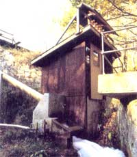
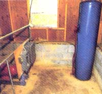
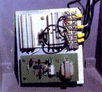
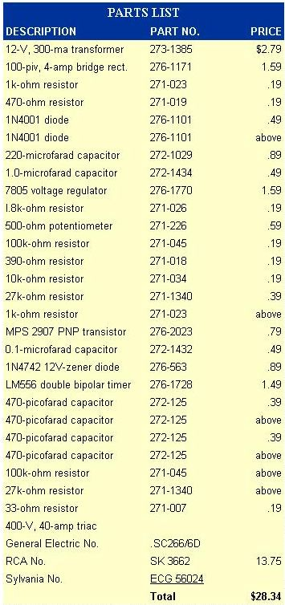
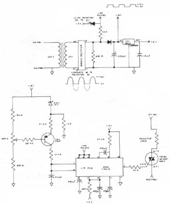
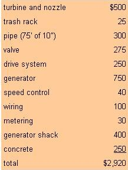

If you're interested in building a home-scale or larger AC hjydroelectric plant, this account of our successful-experiences may help save you a lot of time and money.
It's been more than four years since we reported to you on the construction of a small hydroelectric system at Eco-Village (see issue 66, page 106). In the meantime, we've been working steadily on refining the design to improve its performance and make it more practical. And, as our system has matured, we've learned some lessons . . . ones you can "go to school on" to make your own system work (and cost) right the first time.
You may remember that the heart of our plant is a homemade crossflow (or Mitchell-Banki) turbine that's 12 inches in diameter and 18 inches long. The device was made by slicing 72° sections from 4" Schedule 40 steel pipe and welding 20 of the arcs into end plates made of 1/4" mild steel. It still runs essentially unchanged: We removed it at one point and trued its circumference on a lathe, in hopes of gaining power from the tighter fit between turbine and nozzle. Unfortunately, reducing the clearance to 1/32" produced no detectable effect on the runner's output.
In its nearly five years of operation, our crossflow has spun away without a hitch. Even though debris from the lake has slightly bent one of the blades, the tweak hasn't noticeably affected the turbine's performance.
Maintenance has consisted solely of an annual greasing of the SCB pillow-block bearings that the 1-7/16" shaft rides on.
Reliable as it's been, however, we have wished that the turbine had been designed differently in the first place. Our crossflow's nozzle was sized to deliver 3.5 cubic feet per second (cfs, or about 1,500 gallons per minute) of water, and we've confirmed that discharge rate with a weir, a flow-measuring device. The problem is that we don't have a dependable 3.5-cfs supply from the 11-acre (54-acre-foot) Eco-Village lake. The system design was based on an Army Corps of Engineers estimated flow rate for Transylvania County, North Carolina, of 3.8 cfs per square mile. That was a mistake.
Since the Eco-Village plant went on-line, a detailed assessment of microhydropower potential in western North Carolina (sponsored by the North Carolina Alternative Energy Corporation, or NCAEC) has produced much more specific-and therefore accurate-flow figures for the region. As it happens, the Eco-Village's elevation is somewhat lower than the average for Transylvania County. And in the Southern Appalachian region, flow per square mile increases with altitude. The NCAEC report suggests that the mean flow at Eco-Village should be about 2.6 cfs per square mile, a number that jibes well with our experience.
What does all this mean? Well, during much of the year we simply can't run our turbine full-time without draining the lake. And, because we're adamant about maintaining stable ecological conditions in the lake and downstream, we have to keep a close eye on the lake level while the plant is operating.
Changing the turbine discharge will be a difficult undertaking, because the assembly is cast into reinforced concrete. Nonetheless, we plan to install an adjustable nozzle. To date, all the homebuilt crossflow turbines that we know of have been able to release only a fixed amount of water. Now, however, there are three different variable-flow nozzle designs in development by members of the Appalachian Micro-Hydro Association, all three of which are within the construction capabilities of an individual with a well-equipped home shop. Two of these turbines have already been built, and one is installed and undergoing testing (in nearby Murphy) as this is written.
A nozzle capable of varying water discharge could increase the annual output of our hydroplant considerably. If, for example, the nozzle were designed for flows of between 1.5 and 4.5 cfs, the system could take full advantage of periods of heavy rainfall and then operate at lower output during dry spells (instead of shutting down). You can be sure that we'll report on at least one of the variable designs if and when it's proved successful.
The 10-kilowatt Kato alternator that we initially installed was far too large for the actual output of the system. Most alternators achieve their best efficiency at 80 to 90% of their rated capacity, and we were a far cry from that. Besides that, the $3,000 unit was far more expensive than necessary.
In the spring of 1981 we replaced the Kato with a Winpower 2.5-kilowatt, 120-volt AC unit, which we bought for $750 off the shelf from a local electrical supplier. Our prior efforts to scrounge a replacement unit had been unsuccessful: We found that used and rebuilt alternators were available in larger sizes, but that a secondhand 1,800-RPM alternator smaller than 5 kw was a rare bird indeed. Consequently, we decided to buy a new unit. In four years the Winpower has failed only once-when a mouse nibbled through a rectifier wire. The repair cost less than $50.
The turbine and generator are linked by a pair of three-groove pulleys with two B-width belts. The lower one (on the turbine) is 20.5 inches in diameter, and the upper sheave is adjustable to fine-tune speed. We've found that, with our 12.5 feet of net head, the turbine runs most efficiently at 275 to 300 RPM, which corresponds to an upper diameter of about 3-1/3 inches. According to standard engineering texts, a single-step speed increase of this ratio is too high for optimum efficiency. However, when we tried installing a jack shaft to make the speed increase in two stages, the system's output declined.
With an independent, alternating-current (standard-household-power) system such as ours, it's important that generator speed remain constant to maintain steady voltage and cycles. Our last report described a mechanical speed control that sensed generator speed and adjusted two variable pulleys to keep RPM constant. For several reasons, we've discarded that system in favor of another.
The variable-pulley arrangement used a drive belt roughly four inches wide, and an impressive amount of heat was released by the hardware during operation. Heat means friction, and it was obvious that our watts were being used to warm the generator shack (as it turned out, about 300 watts were going to friction). On top of the inefficiency of the mechanical control, its response lagged behind drastic changes in load, allowing transient changes of cycling to as low as 52 and as high as 68 hertz. The final blow, though, was the cost of the system: roughly $3,000, custom-made.
When we substituted the Winpower alternator for the Kato, we changed the speed control to an electronic load diverter, which we bought for $575 from Hydro-Watt, Inc. This device maintains a constant output from the generator by switching the load between the demand circuit and a water heater (or other resistive load). Now, when we call for lights in the log cabin woodworking shop, the electronic panel automatically diverts power from the water heater and delivers it to the shop.
Building an Electronic Speed Control
George Ruppert's electronic speed control can be built almost entirely from parts available at a local Radio Shack. The triac and its heat sink, however, will have to be obtained through an electronics supply house. Bear in mind that these components will have to be sized according to your system's output. Because the maximum current our generator can produce is a little less than 20 amps, and the peak voltage could be about 230 in a severe overspeed condition, George picked a 40-amp, 400-volt triac to allow a generous margin of safety. (Also, the model George used doesn't require insulated mounting screws, which reduces the chance of failure and shock.) The triac you choose should have a control current of 50 milliamps or less.
Very briefly, the device is a voltage sensor that controls the portion of each cycle in which power is delivered to a resistive load (a water heater). The power supply transforms 120 VAC to 12 VAC, and a bridge rectifier dips the alternating current pulses. The power supply has three outputs: a line pulse to control the two-part timer, an 18-volt output that varies with generator voltage, and regulated 5 VDC. A comparator circuit supplies a variable current, the level of which depends on the deviation from 18 volts, to the front half of the LM 556 timer. A potentiometer on one side of the comparator allows the voltage to be adjusted. The length of time that the first timer stays on determines when the second timer sends a signal (of about 85 milliamps) to the triac. Only when activated by the second timer does the triac send power to the water heater. And, because the triac resets each time voltage crosses zero, the amount of current delivered to the water heater is in proportion to the point in the sine wave where the second timer tells it to kick on.
A few precautions about the device: The 120-VAC neutral ties from the transformer across to the triac, so the circuit board of the controller could deliver a dangerous shock. Bear this in mind when you're fiddling with the board or adjusting the voltage. A protective cover, with an access hole for the voltage-adjustment potentiometer, would offer worthwhile protection. Also, the heat sink for the triac must be large enough to dissipate heat adequately, or the triac will fail to switch. Be sure to use a large heat sink (Fair Radio Sales Co., P.O. Box 1105, Lima, OH 45802, is one low-cost source), and apply the triac to it with heat-sink compound. Finally, the load that the triac supplies should be resistive (as is our water heater), because a reactive load may require phase correction.
At the time, the electronic diverter solved all of our control problems for what seemed a reasonable amount of money, so we have no quibble with the price. But there was the nagging knowledge that whatever it was that made the control work certainly didn't cost more than $100 in parts. Frankly, though, we just didn't have the electronic expertise to design one of these theoretically complicated gadgets. Then in June of 1984 a person with that know-how happened to visit Eco-Village and attend the hydropower workshop. Before heading home, George Ruppert offered to take a stab at designing a control.
Three months later, a package arrived in the mail. A week after that, George drove in to help install and debug the control. The details of his work are reported in the accompanying sidebar, but basically his control consists of about $35 worth of electronics and a circuit simple enough for a hobbyist to understand. The thing works. . . and very well! We're now maintaining constant output within 3 volts, equal to a change in cycling of about one, from no- to full-demand load.
In January of 1982 a staff member demonstrated the plant to visitors and then shut the gate valve that controls water flow completely when he went home. That night the temperature dropped below zero, and the $900 valve split wide open. The cast iron was too far gone to be welded up, so we were in the market for a new valve. Rather than purchase another high-priced gate valve, we decided to try a butterfly valve. The butterfly is simply a disk that can be turned parallel or perpendicular to the flow, while the gate drops down across the flow by way of a threaded rod.
Because the butterfly can be closed much more quickly than the gate, it increases the possibility of pipe hammer, and its design is inherently weaker than its slower-closing cousin. Still, for $275 (a $625 saving), we figured it was worth a try, and in the three years since it was installed, the butterfly has given us no trouble at all. For our low-head (and therefore low-pressure) installation, the butterfly valve seems to be adequate.
We've also changed our intake screen to a three-foot-square frame covered with 1/2" galvanized hardware cloth. The trash rack's large surface area keeps water moving through slowly enough to prevent debris from plugging the screen. A cleaning after the leaves fall each year is all that's necessary. We did encounter one problem at the intake end: Because our intake opening is simply the end of our 10-inch pipe, without any funnel, we sometimes draw a vortex of air all the way down to the pipe, which is 24 inches underwater. The air that's drawn in seriously hampers performance, but we learned to break up the vortex by floating a piece of 1/4" marine plywood on the surface within the intake screen. The plywood needs to be replaced annually, before it rots, sinks, and is sucked into the pipe.
We've been able to boost the output of our hydroplant from 1,800 watts to 2,100 watts, largely because of the much more efficient control system. The net efficiency of the system is now between 55 and 60%, a typical range for well-executed microhydroelectric plants. By using a Prony brake (a sort of makeshift dynamometer), we've been able to determine that the turbine is operating at roughly 70% efficiency. That's less than many commercial turbines achieve that operate at higher heads. For a homemade device running with only 12.5 feet of head, however, it's a pretty respectable figure.
Though we've spent quite a bit of money refining our system over the last five years, the plant could be duplicated (with the benefit of 20/20 hindsight) roughly as follows:
Hired labor would obviously boost this total considerably . . . but even if the price doubled, the plant would only cost about $2.75 per watt of installed capacity. And in a year's time it could conceivably produce almost 18,000 kwh, or about $1,250 worth of power at our prevailing retail rates. (Selling to the utility, which we have opted not to do, would bring only about one-third of the retail rate.)
After five years of polishing, our little hydroplant is undoubtedly one of the most refined pieces of alternative energy hardware at Eco-Village. Now we're just waiting for the first successful variable-flow turbine to be demonstrated.
EDITOR'S NOTE: To order complete plans for building our fixed-nozzle crossflow turbine.
|
 MOM'S microhydroplant has been installed for almost five years now, and we've learned a number of lessons about the practical application of very small waterpower systems. In that time, however, the crossflow turbine has been a tireless performer. |
 The speed of the alternating current system is now controlled by an electronic load ballast device. A constant load is maintained on the alternator by switching power back and forth between the demand circuit and the water heater shown at right. |
 The heart of the speed control: about $30 worth of electronics. |
|
 |
 |
 |